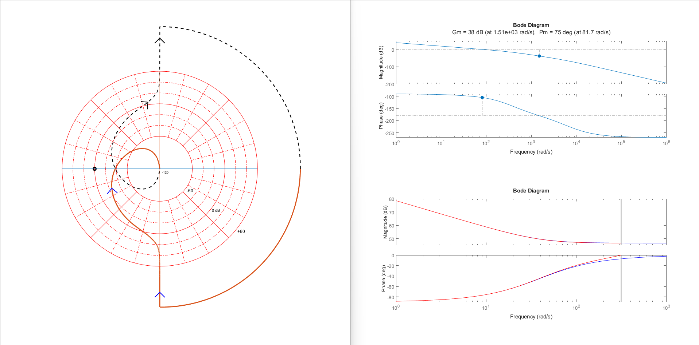
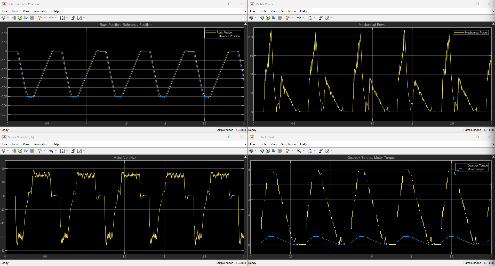
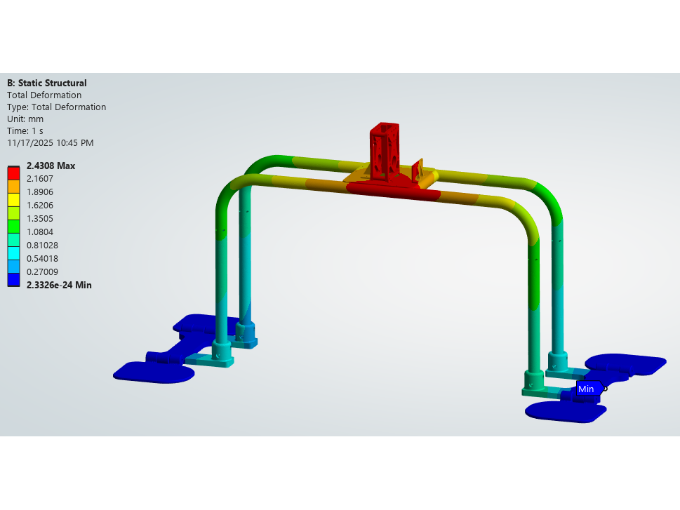
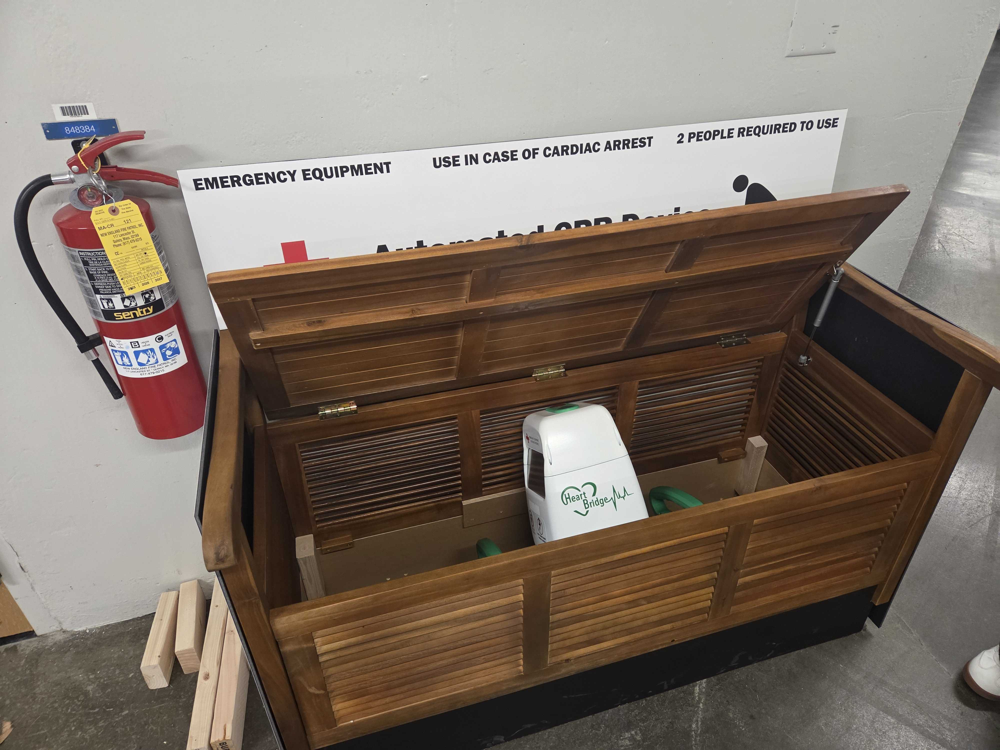

CPR Machine: Heart Bridge
For my capstone class in Fall 2025, 2.009, I was a leading member of a team who took it upon ourselves to design a CPR machine that bystanders could safely use in an emergency situation.
This CPR Machine, tentatively named Heart Bridge, is innovatively designed to be safe in the hands of bystanders, rather than requiring professional medical training. We are applying for a provisional patent early in 2026, with the goal of bringing Heart Bridge to market in order to make our CPR device commonly available.
Ideation
The first month or so of the class was dedicated to finding an idea for a innovative product based on our own market research, prototyping, and user interviews. At the end of this process, we settled on a CPR device for bystanders to use. We found that existing CPR devices, such as the Stryker LUCAS or the Zoll AutoPulse, were targeted at trained medical professionals as a way to free up hands, and that there was not a device on the market aimed at improving bystander CPR. Survival rates after a cardiac event decrease by about 10% every minute without CPR, but bystanders cannot keep good compressions for more than three minutes. We wanted to create a device that would be safe and easy to use for bystanders, and that would improve the quality of CPR being administered in emergency situations to the level professionals can achieve.
Our first prototype was a demonstration of our idea to solve this problem. Existing CPR devices brace themselves against the patient, which requires repositioning to slide the device under the patient. This requires training to be done safely, especially in cardiac events where people not on the ground of their own volution may have spinal injuries. Our idea was to have the device be held in place by the body weight of two bystanders, so no repositioning is required. This first prototype showed that structure, along with a mock actuator and end effector to demonstrate the expected behavior of the device.
As lead of the actuator subteam, I led the design decisions that resulted in our choice of actuation method (more detail later) and designed the mock actuator model for our demonstration.

A view of the demo actuator mounted to the first prototype frame.
Refinement
After the proof-of-concept prototype, the actuation subteam began work on an actuator that would meet our design requirements for professional-level CPR. We needed to be able to apply a maximum 500 N of force, with failsafes to ensure we never go past that limit; be able to perform compressions at 107 bpm, the recommendation in literature for mechanical CPR; compress to a depth of 5 cm from the surface of the chest; run for 30 minutes continuously; and take less than 10 seconds total to start automatic compressions after manual ones are stopped.
We chose a rack and pinion with a geared-down input, because we found that we could get the necessary force and speed out of off-the-shelf components while keeping the system linear for easy control. At this stage of the process, I led the electromechanical design of the actuator, including the selection of components, simulation of the system statically via ANSYS FEA and dynamically via Simulink/MATLAB, design of mechanism-critical components, and design of the integration between the frame and actuator. I also wrote the majority of the codebase for the motor controller and the framework for integration with the human-machine interaction subteam's code. The codebase and the Simulink/Matlab work can be found in the project's Github repository here. The final codebase is on the 'final' branch, and the Simulink/MATLAB work is in the 'M4' folder.
{kind=link}

MATLAB plots used to analyse performance of control system. Left shows Nyquist plot of controlled system, right shows Bode plot of open-loop system (top) and continuous-time and discrete-time controllers overlaid (bottom).
{kind=link}

Simulink output for the actuator given the rack and pinion system and the discrete torque-control system I designed.

Main body of the actuator, with sliding bushing for rack, free-running pinion, and waterjet frame plates.
{kind=link}

ANSYS FEA simulation of the device's structural components under the maximum 500 N load. This shows that the maximum deflection of the actuator is low relative to the motion of the end effector (2.5 mm vs. 5 cm), and could thus be ignored.

Another actuator prototype, this time with the final motor, gearbox, and rack & pinion system.

Cross-sectional view of the actuator, showing the rack & pinion system.
Presentation Device
At the end of the semester, the final task for the actuation team was to integrate the existing electronics and code for the motor controller with the electronics and code for the screen and user interface. In the end, we made it all work, but we significantly underestimated the time we would spend troubleshooting the integration. By this point of the semester, I had transition fully towards being the electrical lead for the team, now that the mechanical design work for the actuator was done. I was responsible for keeping track of the electrical integration between human-machine interface and the motor controller, and soldered most of the electrical connections. From there, it was just a jigsaw puzzle to fit everything in the outer enclosure.This was also the point in the semester that we settled on the name Heart Bridge for the device.
In the end, we were able to meet all of the design constraints we set out for ourselves, except for the 10 second time between end of manual compressions and start of automatic compressions. Unfortunately, we did not have time to tune our homing routine enough before the end of the semester. We plan to continue this project in the future, however, and this is one of the improvements we will make.

Our final actuator, with wiring that was not attached to the device's housing

View of the inside of Heart Bridge, showing all of the cable routing required for all of the device's functionality.

Single-page circuit schematic for Heart Bridge, made at the request of a teammate. An up-to-date, multi-page version is available here.

The final (for now) version of Heart Bridge.
{kind=link}

We decided on a storage bench as an example of a storage location for a public place.

Our livestreamed final presentation, demonstrating Heart Bridge in action.
Next Steps & Reflection
My team and I have decided to pursue this project into the future, and plan to continue development of the device and to pursue a provisional patent in early 2026. I believe that Heart Bridge has the potential to help thousands of people, especially if we reach a level of availability matching AEDs.
If I were to start the project over again with the knowledge I have now, I would have pushed for our team to decide on an idea to pursue earlier so that we would have been less crunched for time when we were developing the actual CPR device. A lot of the compromises we made (which we will fix going forward) were caused primarily by time constraints.